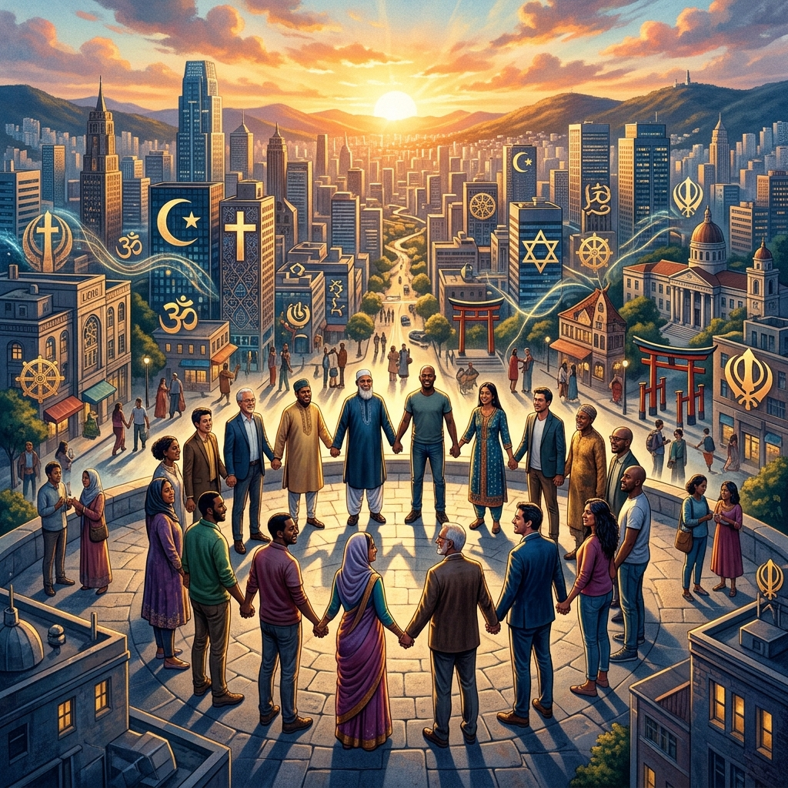
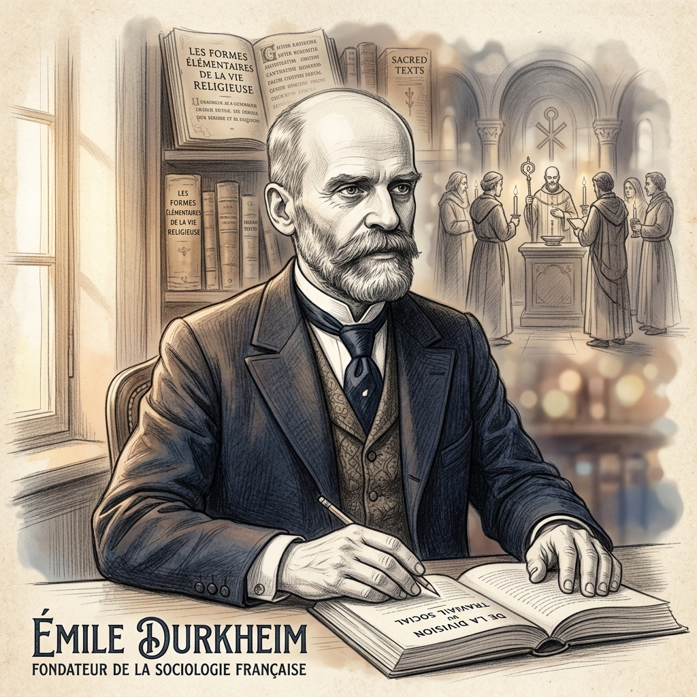
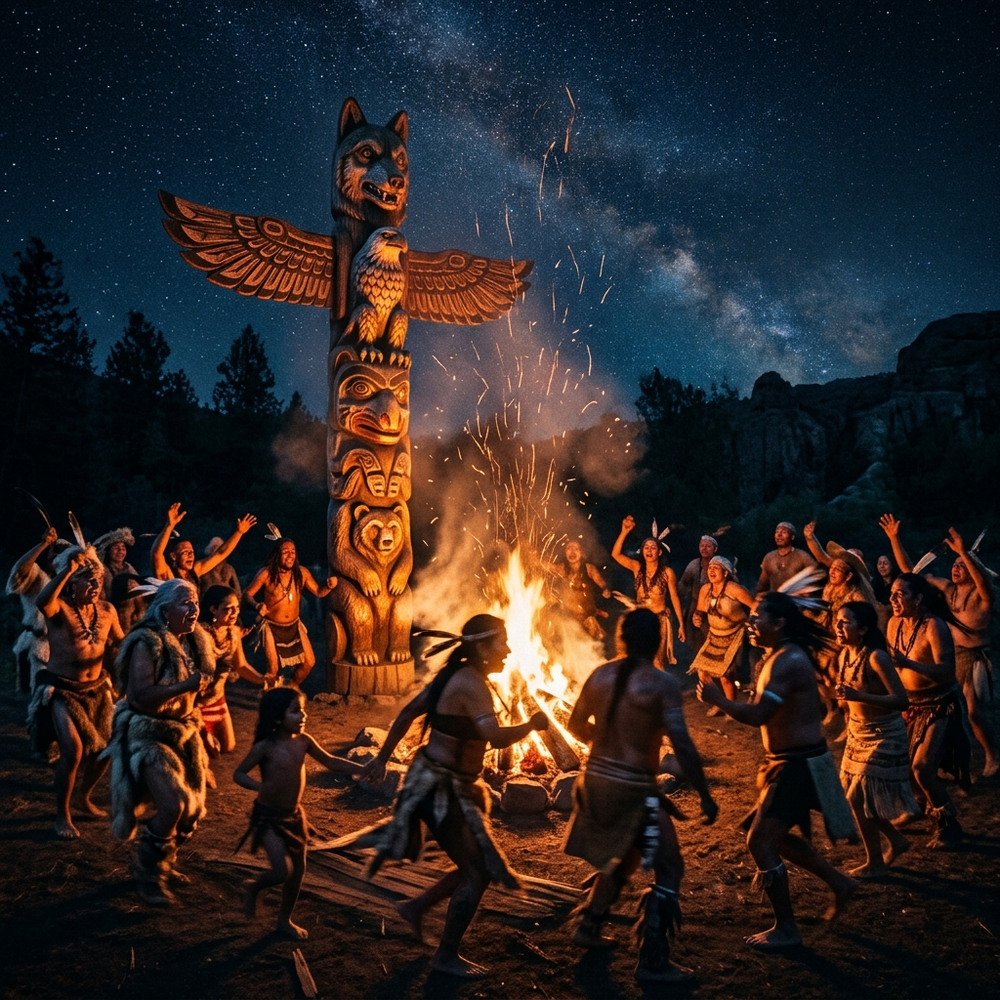

Sociologija Religije
"Religija je nešto izrazito društveno. Religijska su shvaćanja kolektivna shvaćanja koja izražavaju kolektivne stvarnosti." — Émile Durkheim
Tri Pristupa Religiji
Prije nego što se dublje posvetimo Durkheimu, pogledajmo kako tri temeljne sociološke perspektive gledaju na ulogu religije u društvu.
Funkcionalizam
Vidi religiju kao "ljepilo" društva. Ona stvara zajedničke vrijednosti, osigurava socijalnu koheziju i daje smisao životu u kriznim trenucima. Fokus je na pozitivnim učincima za stabilnost.
Konfliktna teorija
Vidi religiju kao sredstvo moći. Marx ju je nazvao "opijumom naroda" jer tješi potlačene i odvraća ih od borbe protiv nejednakosti, opravdavajući postojeći poredak kao "Božju volju".
Interakcionizam
Fokusira se na simbole i značenja. Proučava kako vjerski identiteti utječu na svakodnevnu komunikaciju, kako se rituali doživljavaju na osobnoj razini i kako religija oblikuje našu percepciju stvarnosti.
Top 5 Religija na Svijetu
Kvantitativni uvid u vjerski pejzaž današnjice. Iako broj sljedbenika ne govori o "istinitosti" vjere, on nam pokazuje opseg društvenog utjecaja ovih sustava.
Kršćanstvo
Najveća skupina
Islam
Najbrži rast
Hinduizam
Većinom u Indiji
Budizam
Istočna Azija
Židovstvo
Povijesni temelj
*Podaci prema procjenama za 2024. godinu. Oko 1.2 milijarde ljudi deklarira se kao religijski neopredijeljeno.
Émile Durkheim: Religija kao Društvena Činjenica
Za Durkheima, religija nije bila o "nadnaravnom" ili Bogu, već o **društvu**. On je religiju promatrao kao ključni mehanizam koji drži ljude na okupu.
Glavna podjela u religiji je ona između **svetog** (izdvojenog, zaštićenog zabranama) i **profanog** (svakodnevnog, uobičajenog).

Totemizam i Kolektivna Euforija
Proučavajući australske aboridžine, Durkheim je zaključio: Bog je samo personificirano društvo.

Totem kao simbol društva
Kada klan obožava svoj totem, on zapravo slavi svoju vlastitu snagu i jedinstvo. Totem je opipljiv simbol nevidljivog društvenog autoriteta.
Kolektivna Euforija
To je ono stanje visoke energije kada se ljudi okupe u ritualu. Pojedinac se osjeća "izvan sebe", ponesen kolektivnom emocijom. Ta energija pretvara obične predmete u svete.
Obnavljanje solidarnosti
Rituali se moraju ponavljati jer društvene veze s vremenom slabe. Svaki obred je "punjenje baterija" kolektivne svijesti.
Max Weber: Protestantska etika i "željezna krletka"
Kada je njemački sociolog Max Weber početkom 20. stoljeća objavio svoje prijelomno djelo Protestantska etika i duh kapitalizma, ponudio je jednu od najfascinantnijih teorija: kako je religijska tjeskoba stvorila moderni kapitalizam.
1. Doktrina o predestinaciji i tjeskoba
Prema kalvinizmu, Bog je unaprijed odlučio tko će biti spašen, a tko proklet. Čovjek to ne može promijeniti. To je stvorilo golemu **egzistencijalnu tjeskobu**. Vjernici su grozničavo tragali za "znakovima" Božje milosti u svom uspjehu na Zemlji.
2. Rad kao poziv (Beruf) i askeza
Rad je postao sveti poziv. Uspjeh u poslu tumačen je kao znak Božje naklonosti. Istovremeno, askeza je zabranjivala luksuz. Rezultat? **Prisilna akumulacija kapitala** kroz stalno reinvestiranje, što je postavilo temelje kapitalizma.
3. "Željezna krletka" (Stahlhartes Gehäuse)
Danas je taj sustav postao posve neovisan o religiji. Weber ovaj krajnji stadij opisuje kao "željeznu krletku" (čelični oklop) racionalizacije u kojoj smo svi zarobljeni.
⚠️ Ironija povijesti
Vjerski žar je ishlpio, ostavljajući iza sebe sekularnu strukturu utemeljenu na učinkovitosti i produktivnosti. Moderni čovjek danas živi u svijetu u kojem su materijalni uspjeh i kalkulacija vrhovne vrijednosti, dok je prvotni duhovni smisao odavno zaboravljen.
Društvene Funkcije Religije
| Funkcija | Opis i Učinak |
|---|---|
| Socijalna kohezija | Okuplja ljude oko zajedničkih simbola i rituala, jačajući osjećaj pripadnosti. |
| Moralna regulacija | Postavlja norme i pravila (tabue) koji sprječavaju anomiju (društveni kaos). |
| Vitalizacija | Daje pojedincu emocionalnu snagu da se nosi s životnim krizama i gubicima. |
| Spoznajna funkcija | Oblikuje naše osnovne kategorije mišljenja: vrijeme (blagdani), prostor (svetišta). |
Budućnost: "Kult Pojedinca"
Durkheim je predvidio da će se u modernom, sekularnom društvu pojaviti nova religioznost. Budući da stara božanstva blijede pred znanosti, **čovjek** (njegovo dostojanstvo i prava) postaje nova "sveta stvar". Ljudska prava postaju moderne vjerske dogme, a humanost moralna zajednica.